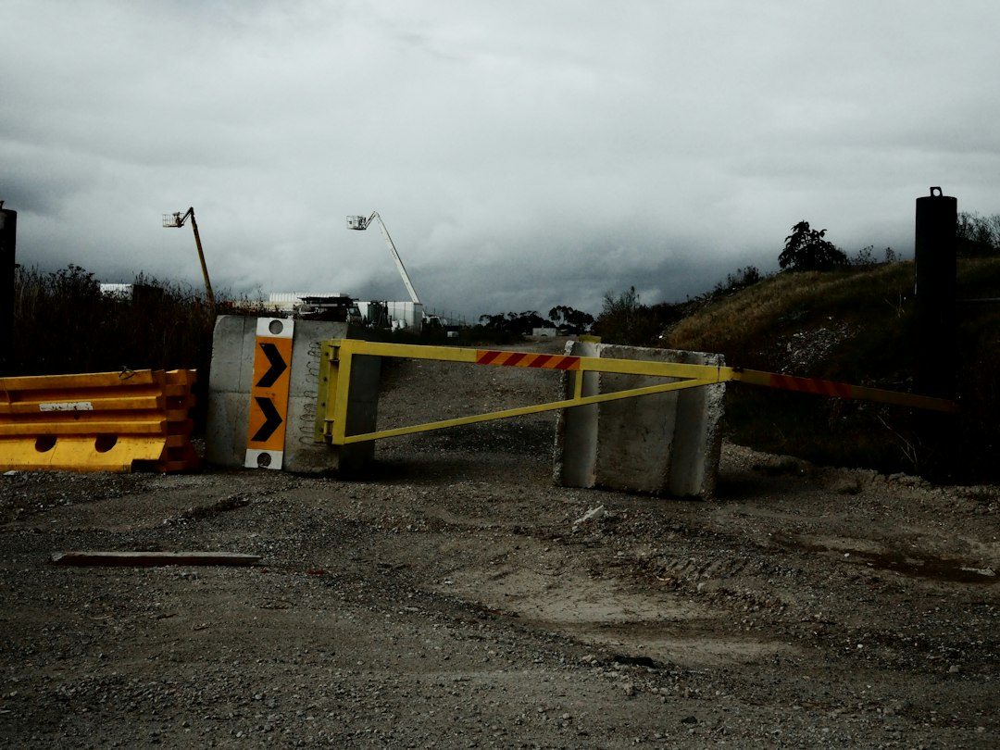

For a Geelong retaining wall project, the useful starting point is a site record, not a material choice. The published guide asks owners to measure retained levels, trace water movement, note access and identify upper-ground loads before comparing quotes. It lists eight service paths, four first-scope records and 15 local location pages. In Victoria, the source page says building-permit questions arise at 1 metre or more, and near boundaries where adjoining property could be damaged.
For owners comparing retaining wall contractors geelong options, the practical question is whether the wall, water path, access route and approval pathway have been described clearly enough for a useful quote.
Retaining Wall Contractors Geelong Explained
Retaining Wall Geelong frames the early decision around retained levels, water, loads and construction access. That is a more useful brief than asking for concrete, timber or block pricing before the wall has been measured and the ground around it has been read.
A contractor comparison should begin with what the wall supports. Record both ends of the wall, the upper and lower ground, visible outlets, fences, buildings, trees, driveways and the route from the street. For an existing wall, include a long view that shows lean or bulging, then note whether the symptom has changed.
- Measure wall height and retained levels before choosing a system.
- Describe nearby loads such as fences, driveways, buildings or higher ground.
- Trace surface falls, filtered drainage, pipe runs and the lawful outlet question.
- Note access width, demolition route, spoil handling and protection of adjoining areas.
Material Choice Follows Constraints
The source guide names concrete sleepers, treated timber, reinforced masonry, segmental blocks, stone and gabions. The useful distinction is not which looks strongest in isolation. Each system has a different footprint, finish, maintenance profile, delivery requirement and foundation expectation.
Concrete sleeper and steel-post systems may suit boundary or replacement projects when loads and drainage are detailed. Treated timber is presented for suitable low garden walls and terraces where design life, soil contact and later maintenance are understood. Reinforced masonry is described as compact structural retention, while segmental systems may involve interlocking blocks, reinforced soil, foundations, drainage and geogrid where specified.
Stone and gabion options need room for their footprint, batter, material delivery and drainage behaviour. That makes access and property layout part of the material decision, especially on established lots where side paths, gardens, existing concrete or neighbouring fences limit the construction route.
Where Local Conditions Change The Brief
Locality earns its place when it changes the scope. The Geelong notes in the source page point to compact established lots in Geelong West, restricted access and drainage outlet questions around South Geelong, varied boundaries and service alignments in Newcomb, and low-lying residential ground or drainage corridors in Whittington.
Moolap is described as mixing residential edges, rural land and former industrial areas, so levels, soil conditions, buried services and water movement need property-specific investigation. Bell Park is noted for post-war housing and renewed lots, where narrow machine routes and ageing boundary walls can bring access widths, underground services and neighbour protection into the quote.
For a broader suburb-oriented reading of the same topic, the related retaining wall Geelong guide is a useful companion because it keeps the focus on wall condition, site constraints and owner questions rather than a single material preference.
Who This Applies To
This guide is most useful for homeowners, renovators and property managers who are trying to turn a vague retaining wall enquiry into a quote-ready brief. It also helps when an existing wall has visible defects and the owner needs to understand whether repair, replacement or further assessment should be discussed.
It applies to new garden terraces, residential boundaries, replacement walls, walls near access constraints and properties where water movement is already visible. It is less useful for anyone seeking a final design, because the source material repeatedly points back to site-specific checks, property-specific professionals and written quote comparisons.
- Use it before requesting quotes, so assumptions are visible.
- Use it before choosing materials, so drainage and access are not treated as afterthoughts.
- Use it when a wall leans, bulges or has changed, so the cause is assessed before a repair path is chosen.
Questions To Ask Before Comparing Quotes
Written quotes are easier to compare when each contractor responds to the same information. Ask how the proposed wall type deals with height, retained levels, drainage, foundation, access, demolition, spoil and exclusions. If approvals are mentioned, separate planning controls from the building-permit pathway rather than treating them as the same approval.
The source page says Victorian permit questions should be confirmed with a registered building surveyor, especially where a wall is 1 metre or more, or on or near boundaries where adjoining property could be damaged. It also notes that planning controls, overlays, easements and title restrictions are separate from building-permit questions.
For a failed wall, ask what evidence points to water pressure, inadequate footings or posts, changed loads, decay, corrosion or ground movement. The repair decision should follow the likely cause, because replacing the visible face without resolving water or load conditions can leave the core problem unanswered.
- Measure the wall. Record approximate height, retained levels, both ends of the wall and any upper-ground loads visible from the property.
- Trace water. Note surface falls, outlets, damp areas and any existing drainage elements before asking for a material recommendation.
- Photograph context. Include the wall face, the ground above and below, access route, fences, driveways, buildings, trees and visible services.
- Check approvals. Ask whether building-permit, planning, easement or title questions need confirmation by the relevant property-specific professional.
- Compare written scope. Review quotes against structure, drainage, access, approvals and exclusions rather than comparing material names alone.
| Decision area | What to record | Why it affects the quote |
|---|---|---|
| Wall and ground | Height, retained levels and nearby loads | These shape the structural scope and material fit |
| Water movement | Surface falls, filtration, subsoil pipe and outlet question | Drainage is part of the wall system, not a finishing detail |
| Access | Street route, side access, demolition path and spoil handling | Restricted access can affect method and sequencing |
| Approvals | Permit trigger questions, planning controls, easements and title restrictions | Different approval pathways may need different professionals |
| Existing defects | Lean, bulging, decay, corrosion or changed symptoms | The likely cause should guide repair or replacement decisions |
Common questions
What should I send before asking for a retaining wall quote? Send the suburb, approximate dimensions, wall condition, nearby loads, water observations, access width, photos and any plans. The source guide says that turns a broad request into a project brief with visible assumptions.
When does a retaining wall need a building permit in Victoria? The source page says Building and Plumbing Commission guidance requires a permit at 1 metre or more and for walls on or near boundaries where adjoining property could be damaged. It says the site should be confirmed with a registered building surveyor.
Is planning approval the same as a building permit? No. The source page states that planning controls, overlays, easements and title restrictions are separate from the building-permit pathway.
Why might an existing wall lean forward? The published guide lists possible causes including water pressure, inadequate footings or posts, changed loads, decay, corrosion and ground movement. It recommends assessing the cause before choosing a repair.
This guide covers quote preparation, site records, material fit, access, drainage and approval questions for retaining wall projects around Geelong.